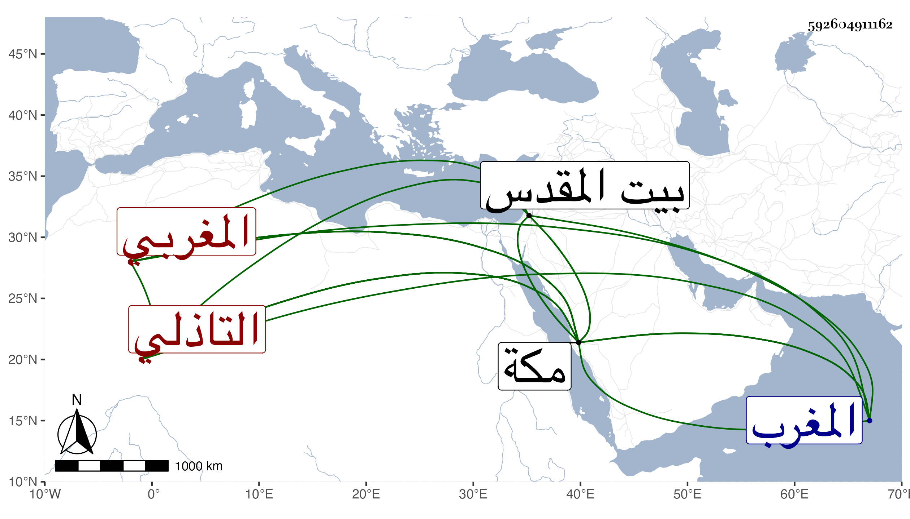

0902Sakhawi.DawLamic.ITO20230111-ara1.EIS1600.592604911162
Biography ID: 592604911162
267
أبو بكر بن يعزا بفتح المثناة التحتانية والعين المهملة وتشديد الزاي بعدها ألف بن محمد بن أبي بكر بن محمد بن أبي بكر الحابري المغربي التاذلي نزيل مكة . ولد تقريبا بتاذل من بلاد المغرب سنة خمس وثلاثين وسبعمائة ونشأ بها فحفظ القرآن وقدم مكة في سنة ست أو سبع وسبعين وحج وزار النبي صلى الله عليه وسلم وبيت المقدس ثم رجع لمكة وقطنها حتى مات لم يخرج عنها إلا مرة للزيارة النبوية وخدم الشيخ موسى المراكشي فعادت بركته عليه . مات في ربيع الآخر سنة سبع وعشرين بمكة عن اثنتين وتسعين سنة ودفن خلف ظهر شيخه ذكره ابن فهد نقلا عن ولده الجمال محمد الماضي .
